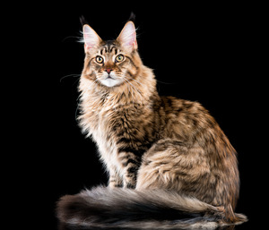
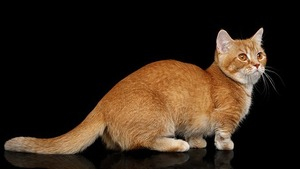
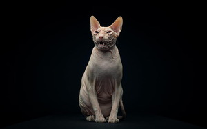
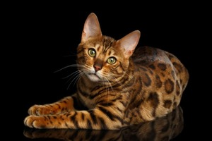
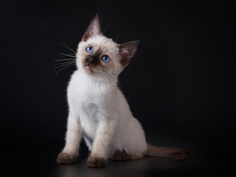
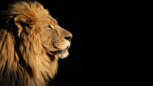

There would probably be big cats with heavy fur that look regal and intimidating

Short cats with stubby little legs

Cats with no hair at all on their bodies

If cats were real they could probably have stripes and cool patterns in their fur

Baby cats would be called kittens

If cats were real there might even be wild cats that are massive and scary
